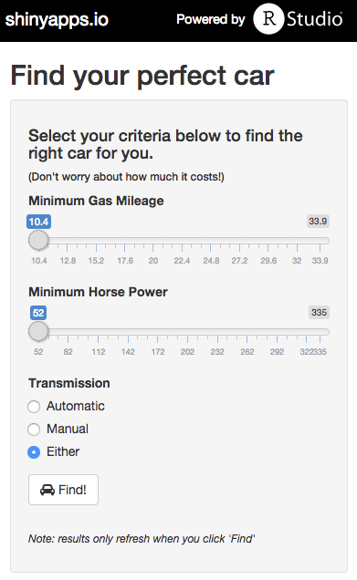

Car Finder
Course project for Coursera's
Developing Data Products
Tring to find the perfect car?
- There are plenty of websites that offer car searches
- But nothing as sophisticated as what you'll see in a moment
- What if you could specify specific requirements like the following:
- gas mileage
- horse power
- transmission
- And then see a list of matching cars in seconds
Well, there's a Shiny app for that
https://bardin.shinyapps.io/course_project/

Using the world's most comprehensive automobile database
head(mtcars)
## mpg cyl disp hp drat wt qsec vs am gear carb
## Mazda RX4 21.0 6 160 110 3.90 2.620 16.46 0 1 4 4
## Mazda RX4 Wag 21.0 6 160 110 3.90 2.875 17.02 0 1 4 4
## Datsun 710 22.8 4 108 93 3.85 2.320 18.61 1 1 4 1
## Hornet 4 Drive 21.4 6 258 110 3.08 3.215 19.44 1 0 3 1
## Hornet Sportabout 18.7 8 360 175 3.15 3.440 17.02 0 0 3 2
## Valiant 18.1 6 225 105 2.76 3.460 20.22 1 0 3 1
Using the app is simple
- Specify your minimum gas mileage requirement
- Specify your minimum horse power requirement
- Select the type of transmission you want
- (Obviously these are the only important factors for a car search)
- And hit the Find! button
And you have results in seconds

Maserati Bora for me